Liquidación mensual a propietarios, pagos, cuentas y facturación de honorarios.
Versión de la app: 0.23.1 · Octubre de 2026
Todas las capturas usan datos inventados (propietarios, deptos, CUIT y montos de ejemplo).
Contenido
Qué es Hornera
Instalación y primer inicio
Cómo se usa la app: lo básico
El ciclo de cada mes, paso a paso
Resumen
Liquidación
Transferencias
Historial
Movimientos
Deptos
Propietarios
Cuentas
Emisores (facturación ARCA)
Stays
Importar Excel
Terminales: usar Hornera en otra PC
Copias de seguridad y recuperación
Problemas frecuentes
Glosario
1. Qué es Hornera
Hornera es el programa de escritorio que reemplaza al Google Sheet de liquidaciones mensuales. Con él se calcula
lo que le corresponde a cada propietario por su depto, se registran los gastos y los pagos, se controla la plata de
cada cuenta de la empresa y se facturan los honorarios ante ARCA.
Lo que hace Hornera, en una línea por tarea:
Tarea
Dónde se hace
Traer reservas y cobros
Desde Stays, con un botón (Stays)
Cargar gastos e ingresos
De cada depto o de la empresa (Movimientos)
Calcular la liquidación
Saldo de cada depto: ingresos, costos, comisiones, honorarios y gastos (Liquidación)
Cerrar el mes
La liquidación queda guardada y se generan los PDF para los propietarios
Pagar a los propietarios
Se registra cada transferencia y se exporta la lista para el banco (Transferencias)
Facturar los honorarios
Factura C electrónica en ARCA, con su PDF y su código QR
Seguir los números
Ocupación, bruto, honorarios, resultado de Hornera y saldos de las cuentas (Resumen)
Mientras se pruebaHasta la versión 1.0 el Excel sigue siendo el que manda: Hornera se usa en paralelo y,
si los números no coinciden, se anota la diferencia (ver "Problemas frecuentes").
2. Instalación y primer inicio
Instalar
Ejecutar el instalador Hornera Setup <versión>.exe. Windows puede avisar "Windows protegió su PC"
porque el instalador no está firmado: tocar Más información → Ejecutar de todas formas.
Aceptar la carpeta que propone. Queda un acceso directo Hornera en el escritorio y en el menú Inicio.
Para actualizar, instalar la versión nueva encima de la anterior: los datos no se tocan.
La primera vez: ¿Servidor o Terminal?
La primera vez que se abre, Hornera pregunta "¿Qué es esta PC?":
Servidor (los datos están acá): la PC de la oficina, la que más tiempo está prendida. Ahí queda la base de datos.
Si hay una sola PC, es esta opción.
Terminal (se conecta a otra PC): una segunda PC que usa los datos del servidor por la red de la oficina
(ver capítulo 16).
Si Windows pregunta por el firewall, permitir el acceso en redes privadas: lo necesitan las terminales.
Dónde quedan las cosas
Qué
Dónde
Base de datos y configuración
%APPDATA%\Hornera (pegarlo en la barra del Explorador de archivos)
Copias de seguridad
%APPDATA%\Hornera\backups
PDF de las liquidaciones
Documentos\Hornera\Liquidaciones\<mes>\
Claves y certificadosLa clave de Stays y las claves privadas de los certificados de ARCA se guardan cifradas
en la PC servidor, aparte de la base. No viajan en las copias de seguridad: si se cambia de PC hay que volver a cargarlas.
3. Cómo se usa la app: lo básico
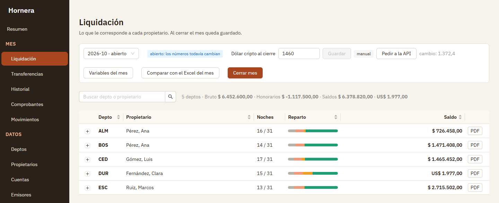
La ventana de Hornera: el menú a la izquierda y la pantalla elegida a la derecha.
El menú
A la izquierda está el menú, agrupado en tres partes. Abajo de todo se ve la versión (por ejemplo v0.23.1):
es el dato a anotar si se reporta un problema.
Grupo
Pantallas
Para qué
—
Resumen
La primera pantalla: cómo viene el mes.
MES
Liquidación, Transferencias, Historial, Movimientos
El trabajo de todos los meses.
DATOS
Deptos, Propietarios, Cuentas, Emisores
Los datos fijos: se cargan una vez y se corrigen cuando cambian.
HERRAMIENTAS
Stays, Importar Excel, Terminales
Traer datos de afuera y conectar otras PC.
Ideas que conviene tener claras
Mes abierto y mes cerrado. Un mes abierto todavía cambia: se le cargan gastos, se traen reservas y los
números se recalculan solos. Al cerrarlo, la liquidación queda guardada tal como estaba ("mes congelado") y
ya no se le pueden cargar movimientos. Un mes cerrado se puede reabrir mientras no tenga pagos registrados.
Pesos y dólares. Cada importe tiene su parte en pesos ($) y en dólares (US$), como en el Excel.
Cada propietario cobra en una moneda; la otra se convierte con el dólar cripto al cierre menos un descuento.
Nada se borra. Los movimientos y los pagos no se borran: se anulan. Quedan en la lista (con "Ver anulados")
y en el registro de cambios.
Buscadores y filtros. Casi todas las listas tienen un buscador arriba y se pueden ordenar tocando el título
de una columna (las que tienen flechitas).
Filas que se despliegan. El + a la izquierda de una fila muestra el detalle (las
reservas de un depto, los pagos de una transferencia).
4. El ciclo de cada mes, paso a paso
Este es el recorrido normal para liquidar un mes. Cada paso está explicado en detalle en el capítulo de su pantalla.
1 · Traer el mes Stays → elegir el mes → Traer mes de Stays. Leer los avisos.
2 · Revisar reservas Stays → corregir con Ajustes lo que haga falta.
3 · Cargar gastos Movimientos → Nuevo movimiento (luz, expensas, arreglos…).
4 · Cotización Liquidación → dólar cripto al cierre (o Pedir a la API).
5 · Revisar Liquidación → desplegar cada depto; comparar con el Excel si hace falta.
6 · Cerrar Liquidación → Cerrar mes → PDF de todos los deptos.
7 · Pagar Transferencias → Exportar a Excel para el banco → Marcar pagado.
8 · Facturar Al marcar pagado se ofrece la factura de los honorarios.
9 · Controlar Resumen y Cuentas: que los saldos den como el banco.
Orden de los mesesLos meses se cierran en orden: para cerrar octubre, septiembre tiene que estar cerrado.
Y para reabrir septiembre, primero hay que reabrir octubre.
"Traer mes" se puede repetirVolver a traer un mes de Stays actualiza reservas y pagos sin duplicar nada y sin
borrar los ajustes cargados a mano. Conviene hacerlo de nuevo justo antes de cerrar.
5. Resumen
Es la primera pantalla. Muestra cómo viene un mes: ocupación, plata y el resultado de Hornera. Arriba se elige el mes;
de entrada muestra el último mes cerrado, que tiene los números firmes. Si se elige un mes abierto aparece el aviso
"mes abierto: los números todavía cambian".
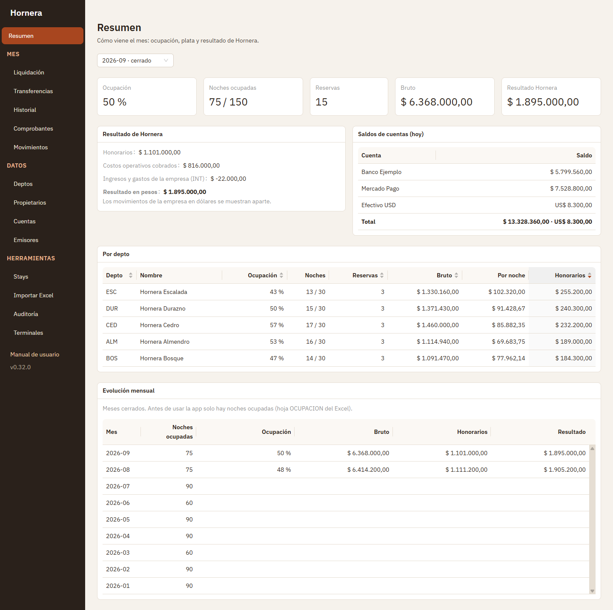
Resumen de un mes cerrado.
Tarjetas de arriba: ocupación (noches ocupadas sobre disponibles), cantidad de reservas, bruto del mes y resultado de Hornera.
Resultado de Hornera: honorarios + costos operativos cobrados + ingresos y gastos de la empresa (los movimientos
sin depto, el "INT" del Excel). Los movimientos de la empresa en dólares se muestran aparte.
Saldos de cuentas (hoy): cuánto hay en cada cuenta en este momento, con el total en pesos y en dólares.
Por depto: ocupación, noches, reservas, bruto, precio promedio por noche y honorarios de cada depto.
Se ordena tocando el título de la columna.
Evolución mensual: los meses cerrados con sus barras. Los meses anteriores a Hornera solo tienen noches
ocupadas (vienen de la hoja OCUPACION del Excel).
6. Liquidación
Es el corazón de la app: lo que le corresponde a cada propietario. Con el mes abierto se calcula en el momento con lo
que haya cargado. Al cerrar el mes queda guardado.
La barra de arriba
Mes: elegir el mes. La etiqueta dice si está abierto o cerrado.
Dólar cripto al cierre: la cotización del mes. Al traer el mes de Stays se completa sola desde internet. Se
puede escribir a mano y tocar Guardar, y entonces queda marcada manual y "traer mes" ya no la pisa.
Si dice provisoria, el valor es de un día anterior al cierre: se actualiza con Pedir a la API.
Al lado se ve el cambio que se usa: la cotización menos el descuento.
Variables del mes: las tarifas de limpieza, lavandería, gestión, etc. (ver más abajo).
Comparar con el Excel del mes: elegir el Excel del mismo mes y la app marca qué deptos dan igual y cuáles no.
Cerrar mes (mes abierto) o PDF de todos los deptos y Reabrir mes (mes cerrado).
La tabla de deptos
Una fila por depto: propietario, noches ocupadas sobre disponibles, una barra con el reparto (pasando el
mouse se ven los montos) y saldo (en rojo si el propietario
debe). Arriba de la tabla están el buscador y los totales. Tocando el + de una fila se ve el detalle:
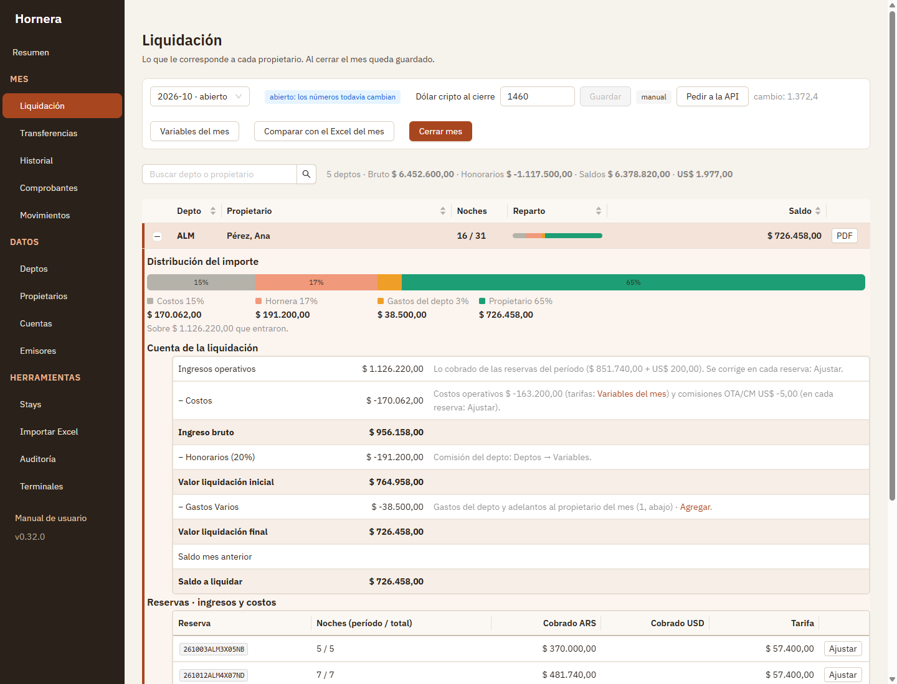
Detalle de un depto: la cuenta de la liquidación renglón por renglón, sus reservas y sus gastos varios.
Primero, la barra Distribución del importe: reparte lo que entró del depto en costos, Hornera, gastos del
depto y lo que queda para el propietario. Si los gastos superan lo que le tocaba, un tramo rayado en rojo muestra lo que
el propietario queda debiendo. Es en pesos (también para el que liquida en dólares) y no incluye el saldo del mes anterior.
Abajo está la cuenta de la liquidación, en pesos (los dólares al cambio del mes). Al lado de cada renglón
dice qué lo compone y, con el mes abierto, dónde se corrige:
Ingresos operativos: lo cobrado de las reservas del mes. Se corrige con Ajustar en la reserva.
− Costos: los costos operativos (la tarifa por reserva, prorrateada a las noches del mes; se cambian en
Variables del mes) y las comisiones de plataformas y agentes (Ajustar en la reserva).
Ingreso bruto.
− Honorarios: la comisión de Hornera sobre el ingreso bruto (se cambia en Deptos → Variables).
Valor liquidación inicial.
− Gastos Varios: los gastos del depto y los adelantos al propietario del mes. Agregar Nuevo Gasto
y Editar abren el mismo formulario que Movimientos, con el depto ya elegido.
Valor liquidación final.
Saldo mes anterior y Saldo a liquidar. Si los redondeos del Excel no coinciden, aparece un renglón
Redondeo de $ 1 para que la cuenta cierre. El que liquida en dólares tiene además Pasado a dólares.
Abajo, las reservas (código interno, noches del mes sobre noches totales, lo cobrado, la tarifa y la comisión de la
plataforma, con el total abajo; una columna sin importes en ninguna reserva no se muestra) y los gastos varios. Con el mes cerrado se ve lo que quedó guardado al cerrar, sin botones para corregir.
El botón PDF de cada fila genera la hoja de ese depto. Con el mes abierto es una vista previa.
Variables del mes
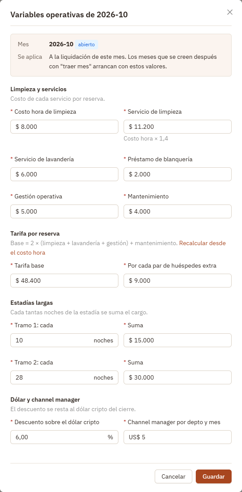
Las tarifas que usa la liquidación del mes.
Solo se pueden cambiar con el mes abierto. Los meses que se creen después con "traer mes" arrancan con estos valores,
así que alcanza con cambiarlas una vez.
Recalcular desde el costo hora: propone el servicio de limpieza (costo hora × 1,4) y la tarifa base
(2 × (limpieza + lavandería + gestión) + mantenimiento). Se puede corregir antes de guardar.
Estadías largas: cada tantas noches de una estadía se suma un cargo (tramo 1 y tramo 2).
Descuento sobre el dólar cripto y channel manager por depto y mes, en dólares.
Si un depto tiene tarifas o comisión propias, se cargan en Deptos → Variables.
Comparar con el Excel
Mientras se usa Hornera en paralelo con el Google Sheet, Comparar con el Excel del mes marca cada depto como
igual al Excel o con N diferencias. Al desplegar el depto se ve cada diferencia con el valor de la app y el del
Excel. Cada diferencia tiene que tener una explicación: un gasto que falta cargar, una corrección hecha a mano en el Excel, etc.
Cerrar el mes
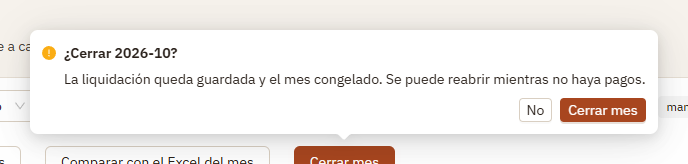
Hornera pide confirmación antes de cerrar.
Revisar que estén las reservas (traer el mes otra vez justo antes), los gastos y la cotización.
Cerrar mes → confirmar. Necesita la cotización y el mes anterior cerrado. Si la cotización es provisoria, avisa.
Con el mes cerrado, PDF de todos los deptos guarda un PDF por depto en
Documentos\Hornera\Liquidaciones\<mes> y abre la carpeta.
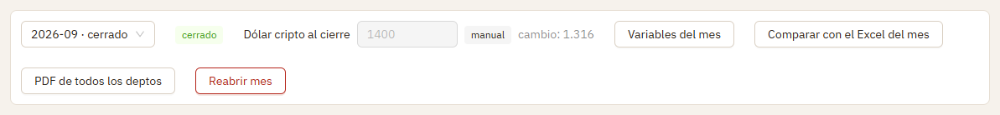
Un mes cerrado: la cotización ya no se edita y aparecen el PDF de todos y Reabrir mes.
Reabrir un mesReabrir mes borra la liquidación guardada y la vuelve a calcular. No se puede si
el mes ya tiene pagos: primero hay que anularlos en Transferencias. Tampoco si el mes siguiente está cerrado.
El PDF de la liquidación
Es la hoja que se le manda a cada propietario: datos del depto y del propietario, período, resumen (la cuenta: ingresos operativos,
costos, ingreso bruto, honorarios, valor de liquidación inicial, gastos varios y valor final), el detalle de ingresos y egresos y el detalle de reservas. Si los honorarios ya están facturados,
el PDF suma una página por cada factura.
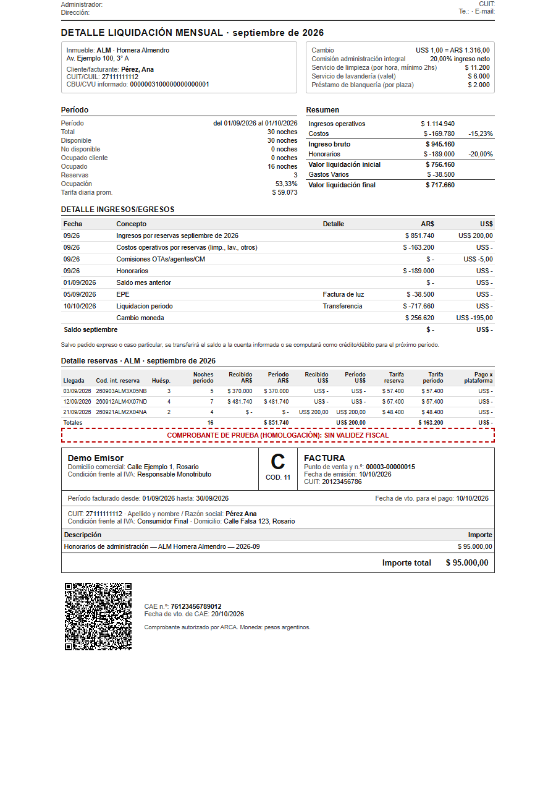
PDF de un depto con su factura al pie (de prueba, por eso dice "sin validez fiscal").
7. Transferencias
Qué se le paga a cada propietario de un mes cerrado, el registro de cada pago y la lista para el banco.
Si no hay meses cerrados, la pantalla lo avisa: las transferencias salen al cerrar el mes en Liquidación.
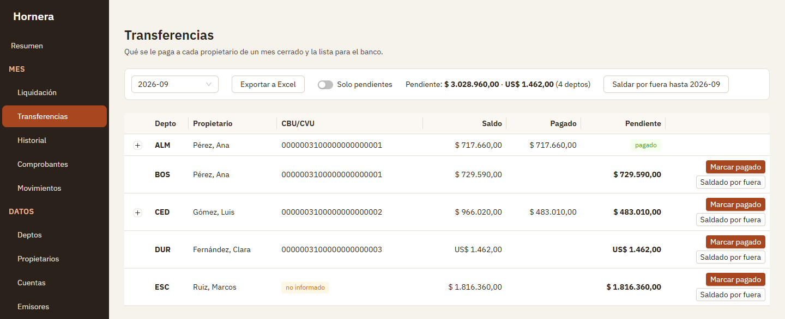
Lo que falta pagar de cada depto. Si un CBU falta, figura como "no informado".
Columnas: Saldo (lo liquidado), Pagado y Pendiente. Arriba, el total pendiente en pesos y en dólares.
Solo pendientes oculta lo que ya está pagado.
Exportar a Excel baja la lista con CBU/CVU e importes para cargar las transferencias en el banco.
Marcar pagado
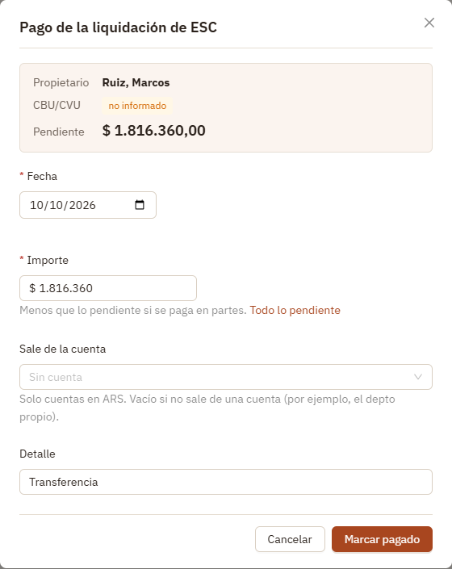
Registrar el pago de una liquidación.
Hacer la transferencia en el banco.
Marcar pagado en la fila del depto.
Revisar la fecha y el importe. Para pagar en partes, poner menos que lo pendiente: el resto queda pendiente
para otro pago. Todo lo pendiente vuelve a poner el total.
Elegir de qué cuenta sale la plata (solo se ofrecen las de la moneda del propietario). Se deja vacía si no sale
de una cuenta (por ejemplo, el depto propio).
Marcar pagado. El pago se registra como movimiento y descuenta el saldo de la cuenta.
Saldado por fuera
Para deudas que ya se resolvieron fuera de la app, típicamente las de antes de empezar a usarla: un mes que figura
pendiente (o que el propietario debe) pero que en la realidad ya está saldado.
Saldado por fuera en la fila del depto pide la fecha en que se saldó y una nota opcional.
Deja de figurar como pendiente y no pasa al mes siguiente como saldo anterior. No registra un pago: no mueve
ninguna cuenta, no aparece en Movimientos ni se factura. Queda en la Auditoría.
Saldar por fuera hasta … (arriba) marca de una vez todo lo pendiente de los meses cerrados
hasta el elegido. Sirve para la carga inicial.
Desmarcar lo vuelve a dejar pendiente. Solo mientras el mes siguiente siga abierto: cerrado,
el saldo ya es parte de ese mes y se marca ahí. Un mes con algo saldado por fuera no se reabre hasta desmarcarlo.
Los pagos de un depto
El + de la fila muestra los pagos hechos: fecha, importe, cuenta y su factura.
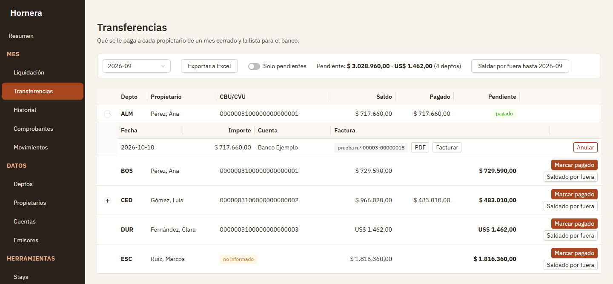
Un pago con su factura ("prueba n.º" porque se emitió en homologación), el botón PDF y Anular.
PDF descarga la factura.
Facturar aparece mientras quede parte de los honorarios del mes sin facturar.
Anular anula el pago (no se borra). Si el pago estaba facturado, Hornera ofrece
Emitir nota de crédito. Si se saltea, el pago queda marcado "pago anulado, factura vigente" hasta emitirla.
Facturar el pago
Después de marcar pagado, Hornera abre Facturar este pago con los honorarios que le corresponden a ese pago (si se paga
en partes, la parte proporcional).
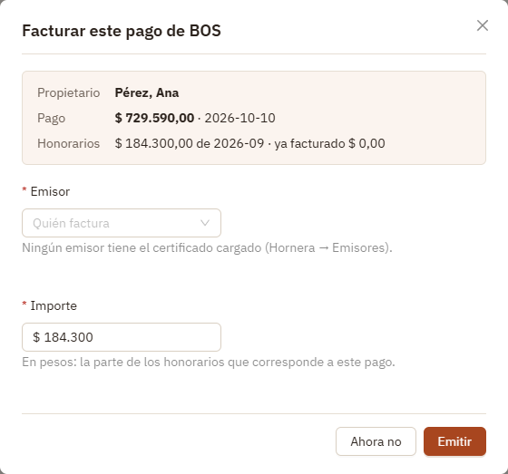
La factura de los honorarios del pago. Acá todavía no hay un emisor con certificado cargado.
Elegir el emisor, o sea quién factura (Lautaro o Amancay). Solo aparecen los que tienen el certificado cargado.
Revisar el importe, en pesos. Si se factura más que los honorarios del mes, avisa pero deja emitir.
Emitir. ARCA devuelve el número y el CAE y el pago muestra "emitida n.º …".
Con Ahora no se puede facturar después, desde la fila del pago.
Si ARCA no respondeSin internet, o si ARCA rechaza la factura, el pago queda registrado igual y la factura queda
rechazada con el motivo. Cuando se solucione, tocar Reintentar en la fila del pago.
Si al propietario le faltan datos fiscalesNo deja emitir y dice qué falta. Se completan en
Propietarios → Datos fiscales.
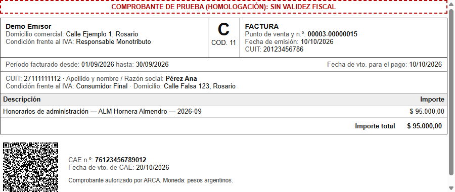
El PDF de la factura: emisor, receptor, período del servicio, importe, CAE y el QR de ARCA.
8. Historial
Los pagos a un propietario mes a mes: lo liquidado, lo pagado y lo pendiente. Se elige un propietario (y, si tiene varios
deptos, se puede filtrar uno). También se llega desde el botón Historial de Deptos o de Propietarios.
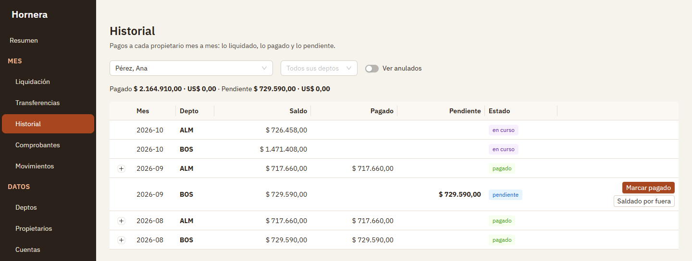
Historial de un propietario con dos deptos.
Estados: pagado, pendiente, saldado por fuera y en curso (mes todavía abierto).
Desde acá también se puede Marcar pagado, marcar Saldado por fuera
y anular un pago, igual que en Transferencias.
Ver anulados muestra también los pagos anulados.
9. Movimientos
Reemplaza la hoja CORRIENTE: gastos, ingresos, adelantos y transferencias entre cuentas. Se elige el mes; con el mes
cerrado la lista es de solo lectura. Se puede filtrar por depto, buscar por concepto, detalle o cuenta, y ver los anulados.
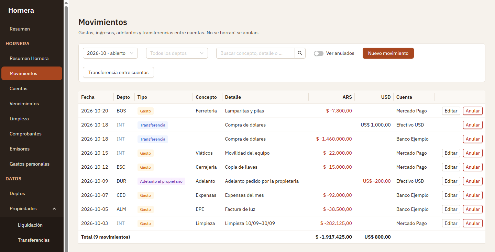
Los movimientos del mes. Los egresos se ven en rojo; abajo, el total en pesos y en dólares.
Nuevo movimiento
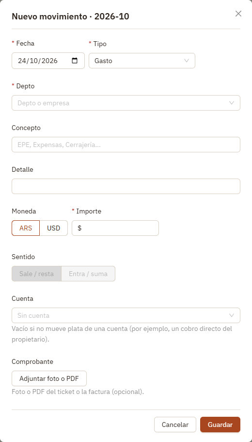
Cargar un gasto, un ingreso o un adelanto.
Campo
Qué poner
Fecha
El día del gasto o del cobro.
Tipo
Ver la tabla de tipos más abajo.
Depto
El depto al que se le imputa, o Empresa si es de Hornera (el "INT" del Excel).
Concepto
EPE, Expensas, Cerrajería, Viáticos… Si se escribe uno nuevo, queda dado de alta.
Detalle
Texto libre para saber qué fue (por ejemplo "Factura de luz de septiembre").
Moneda e importe
El importe en positivo. En los tipos que pueden sumar o restar, el Sentido dice si sale o entra.
Cuenta
De qué cuenta sale o a cuál entra la plata. Se deja vacía si no mueve plata de una cuenta (por ejemplo, un cobro directo del propietario).
Tipo
Cuándo se usa
Gasto
Luz, expensas, arreglos, ferretería… Resta.
Ingreso
Otros ingresos del depto o de la empresa. Suma.
Adelanto al propietario
Plata que se le adelantó antes de la liquidación. Se descuenta de su saldo.
Cobro directo por plataforma
Lo que una plataforma le pagó directo al propietario.
Saldo inicial
El saldo de arranque de una cuenta (sin depto, con la cuenta) o el arrastre de un depto.
Ajuste
Correcciones que no encajan en lo anterior. Puede sumar o restar.
Los movimientos de tipo Pago de liquidación los genera Transferencias, y los de tipo Transferencia, el botón
Transferencia entre cuentas.
Editar corrige un movimiento y Anular lo deja sin efecto (no suma, pero queda en la lista con "Ver anulados").
Transferencia entre cuentas
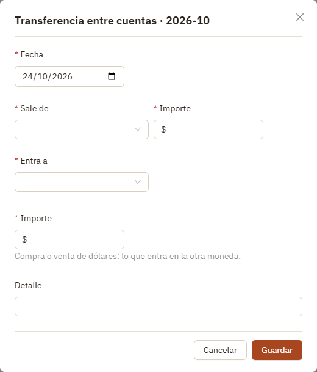
Pasar plata entre cuentas propias o comprar dólares.
Para mover plata entre cuentas de la empresa: Sale de una cuenta y Entra a otra. Si las dos son de la misma
moneda, el importe es el mismo. En una compra o venta de dólares (de una cuenta en pesos a una en dólares) se pone lo que
sale en pesos y lo que entra en dólares. Se registran dos movimientos, uno por cuenta.
10. Deptos
Los deptos que administra Hornera, con su propietario, dirección, comisión y estado. Se cargan al importar el Excel y se
completan con lo que trae Stays (dirección y fotos).
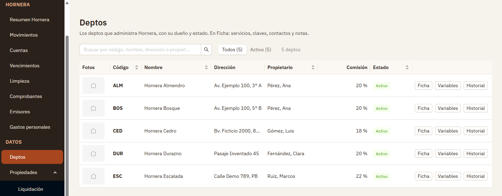
Lista de deptos, con buscador por código, nombre, dirección o propietario.
Variables de un depto
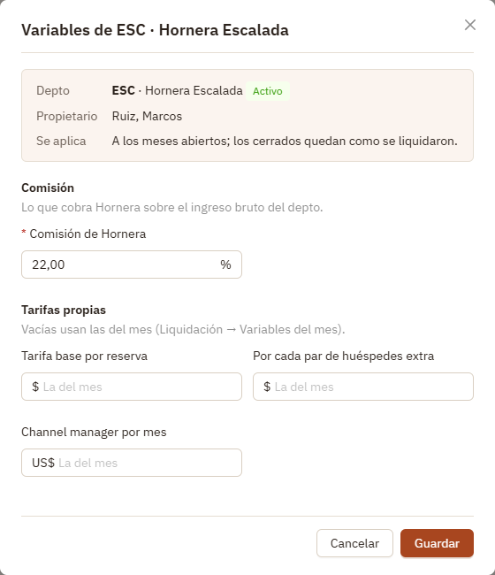
Comisión y tarifas propias de un depto.
Comisión de Hornera: lo que cobra Hornera sobre el ingreso bruto del depto.
Tarifas propias: si el depto tiene una tarifa base, adicional por huésped o channel manager distintos. Vacías usan las del mes
(Liquidación → Variables del mes).
Se aplican a los meses abiertos; los cerrados quedan como se liquidaron.
11. Propietarios
Los dueños de los deptos, en qué moneda se les liquida y si falta el CBU. Desde acá se cargan sus datos fiscales,
que hacen falta para facturarles los honorarios.
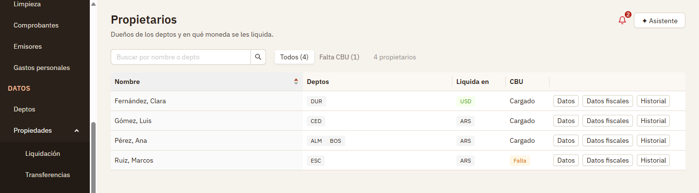
Lista de propietarios con sus deptos y la moneda en que cobran.
Datos fiscales
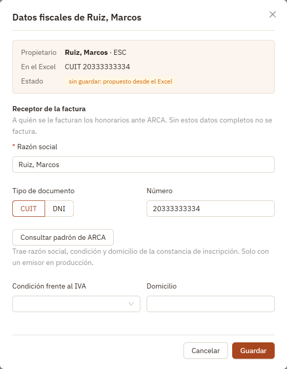
A quién se le factura. La primera vez propone lo que hay en el Excel.
Datos fiscales en la fila del propietario. La primera vez propone el CUIT o DNI y la condición del Excel
(dice "sin guardar: propuesto desde el Excel").
Completar razón social, tipo y número de documento (CUIT o DNI), condición frente al IVA y domicilio.
Un CUIT mal tipeado no se guarda.
Con un emisor ya en producción, Consultar padrón de ARCA completa razón social, condición y domicilio
desde la constancia de inscripción. Revisarlos y tocar Guardar.
12. Cuentas
Las cuentas de la empresa (bancos, Mercado Pago, efectivo) con su saldo, y a qué cuenta entra cada medio de pago de Stays.
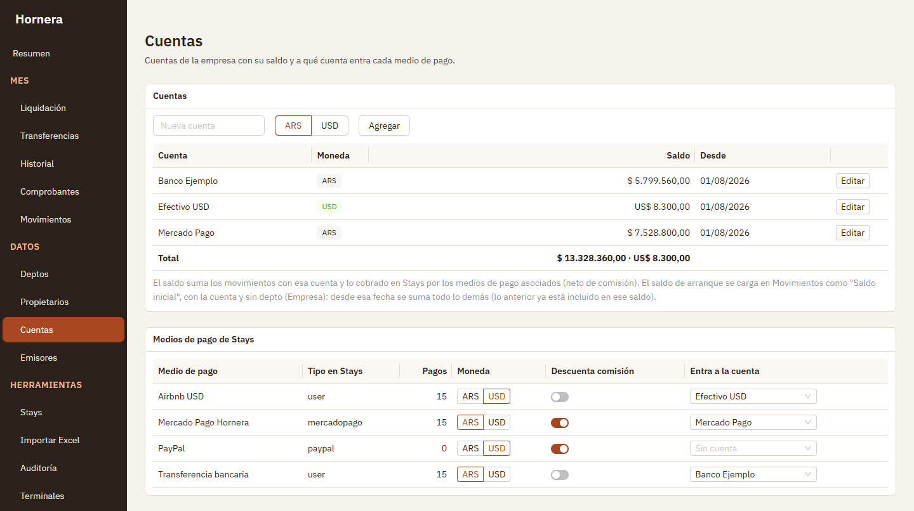
Arriba las cuentas con su saldo; abajo los medios de pago de Stays asociados a cada cuenta.
Cuentas
Agregar una cuenta: escribir el nombre, elegir ARS o USD y Agregar. La moneda no se cambia después.
Editar cambia el nombre o la da de baja. Una cuenta de baja no se ofrece para movimientos nuevos.
De dónde sale el saldo: el saldo inicial + los movimientos con esa cuenta + lo cobrado en Stays por los medios de pago
asociados (neto de comisión). La columna Desde es la fecha del saldo inicial.
Para que el saldo dé como el bancoCargar en Movimientos un Saldo inicial de cada cuenta, sin
depto (Empresa) y con la cuenta, con el saldo real del banco a una fecha. Desde esa fecha Hornera suma todo lo demás.
Medios de pago de Stays
Cada forma de cobro que usa Stays (Mercado Pago, PayPal, transferencia, Airbnb…) se asocia a la cuenta donde entra la plata, en
Entra a la cuenta. También se indica su moneda y si descuenta comisión (Mercado Pago y PayPal: entra lo cobrado menos la
comisión). Un medio sin cuenta asociada genera un aviso al traer el mes.
13. Emisores (facturación ARCA)
Quién factura los honorarios ante ARCA: Lautaro o Amancay, cada uno con su CUIT, su punto de venta y su certificado.
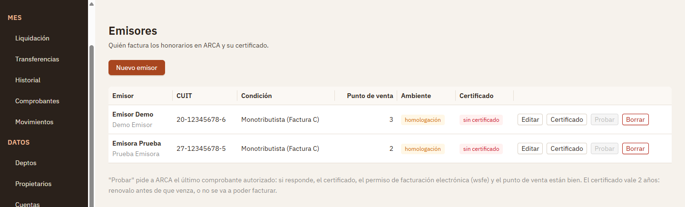
Un emisor en homologación, todavía sin certificado.
Antes: el trámite en ARCA (una vez por emisor)
Lo hace cada uno con su clave fiscal. El detalle está en el manual del certificado; en resumen:
Clave fiscal nivel 3 y un punto de venta de tipo "Web Services". No sirve el de "Comprobantes en Línea".
Generar la clave privada (.key) y el pedido de certificado en la PC servidor.
Obtener el certificado (.crt): en homologación desde WSASS; en producción desde Administración de Certificados Digitales.
Autorizar el servicio "Facturación Electrónica" (wsfe) al certificado en el Administrador de Relaciones.
Para "Consultar padrón de ARCA", autorizar también ws_sr_constancia_inscripcion.
La clave privada es como la clave fiscalQuien tiene el archivo .key puede facturar a nombre de ese CUIT. No mandarlo
por mail ni dejar copias en pendrives: una vez cargado en Hornera, borrar las copias sueltas.
Cargar un emisor
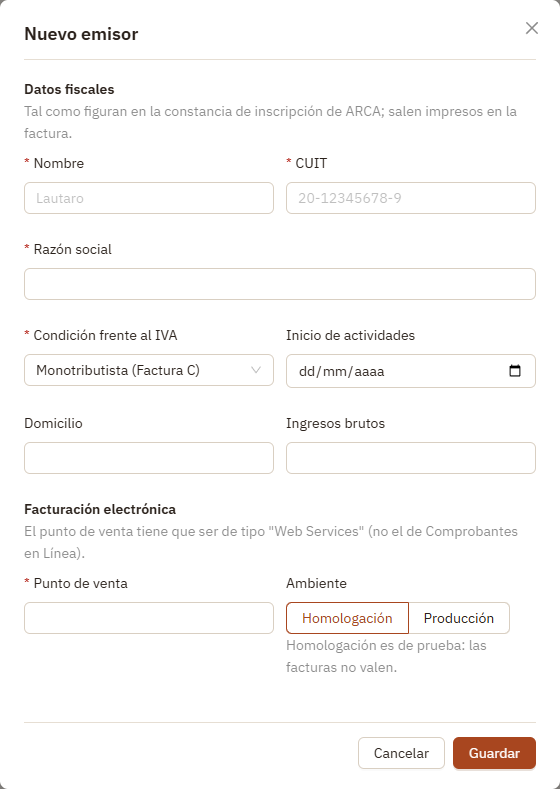
Datos fiscales del emisor y de facturación electrónica.
Nuevo emisor: nombre, CUIT, razón social, condición frente al IVA, domicilio, ingresos brutos e inicio de
actividades, tal como figuran en la constancia de inscripción (salen impresos en la factura).
Punto de venta (el de tipo Web Services) y Ambiente: Homologación es el ARCA de prueba (las facturas no valen);
Producción es el de verdad.
Certificado (solo desde la PC servidor): elegir el archivo .crt y el .key. Hornera rechaza un certificado de
otro CUIT, una clave que no es la de ese certificado y un certificado vencido.
Probar: pregunta a ARCA el último comprobante autorizado. Si responde un número (aunque sea 0), el
certificado, la autorización y el punto de venta están bien. No emite nada ni gasta números.
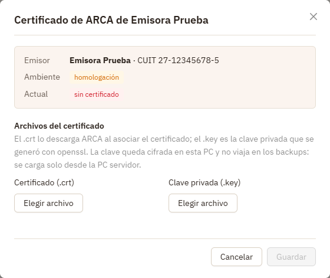
Subir el certificado y la clave privada.
Pasar a producciónEditar → ambiente Producción. Al guardar se borra el certificado de
homologación (el de un ambiente no sirve en el otro): cargar el de producción y tocar Probar antes de facturar.
VencimientoEl certificado vale 2 años. Emisores avisa 30 días antes. Para renovarlo, en ARCA usar
"Actualizar" sobre el mismo alias: así no hay que volver a autorizar wsfe.
14. Stays
Trae de Stays las reservas, los pagos y los medios de pago de un mes.
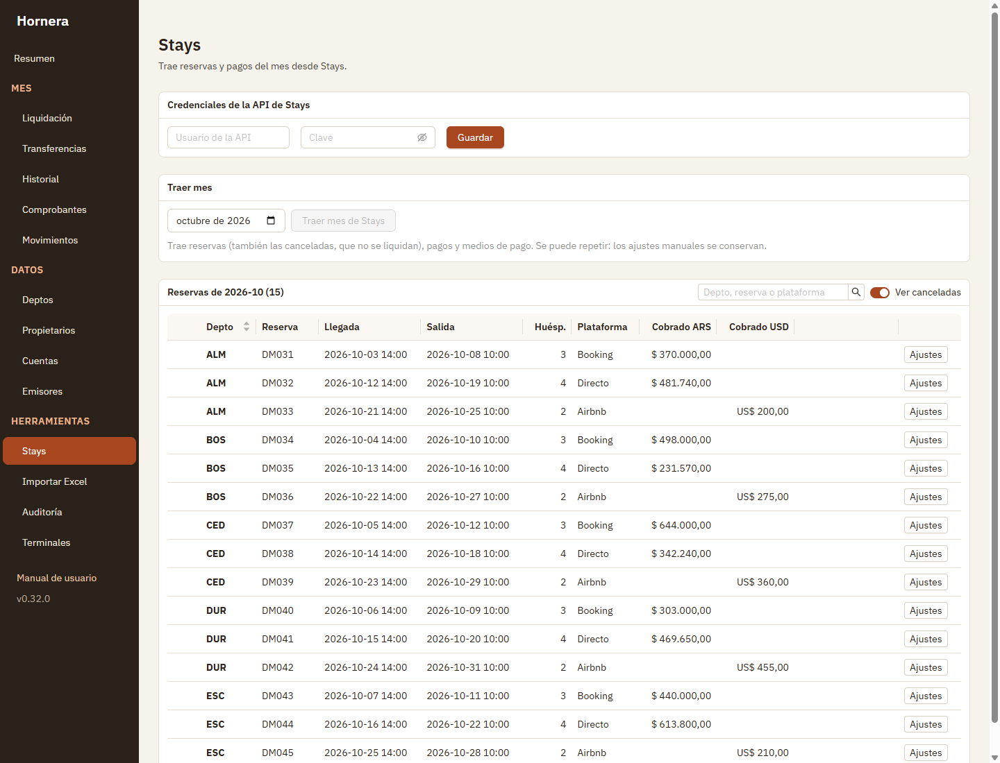
Credenciales, "Traer mes" y la lista de reservas del mes.
Credenciales (una sola vez)
Cargar el usuario de la API y la clave de Stays y tocar Guardar. Solo se puede hacer en la PC servidor.
La clave queda cifrada en esa PC y no se vuelve a mostrar; después se ve "Conectado como …" con un botón para cambiarla.
Traer mes
Elegir el mes y tocar Traer mes de Stays. Si el mes no existía, se crea con las variables del mes anterior.
También trae la cotización del dólar.
Leer los avisos: comisiones de Mercado Pago o PayPal que faltan cargar en Stays, medios de pago sin cuenta, canales o deptos
que la app no reconoce, deptos con otro dueño en Stays.
Revisar la lista de reservas: depto, fechas y horarios, huéspedes, plataforma y lo cobrado en pesos y dólares.
Ver canceladas muestra también las canceladas, que no se liquidan.
Ajustes de una reserva
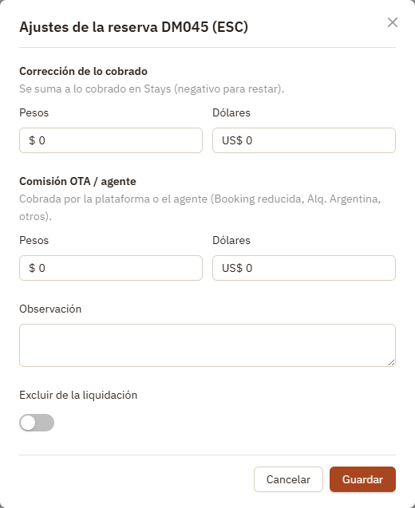
Correcciones manuales de una reserva (las pestañas con lápiz del Excel).
Corrección de lo cobrado: se suma a lo cobrado en Stays (negativo para restar).
Comisión OTA / agente: la que cobró la plataforma o el agente (Booking reducida, Alquiler Argentina, otros).
Observación: para acordarse por qué se corrigió.
Excluir de la liquidación: la reserva no se liquida, pero no se borra.
Los ajustes no se pierden al volver a traer el mes. En un mes cerrado no se pueden cambiar: hay que reabrirlo.
15. Importar Excel
Carga un mes desde el Google Sheet de liquidaciones (exportado como .xlsx): propietarios, deptos, saldos, movimientos e histórico.
Se usa para arrancar con Hornera y para traer los meses anteriores.
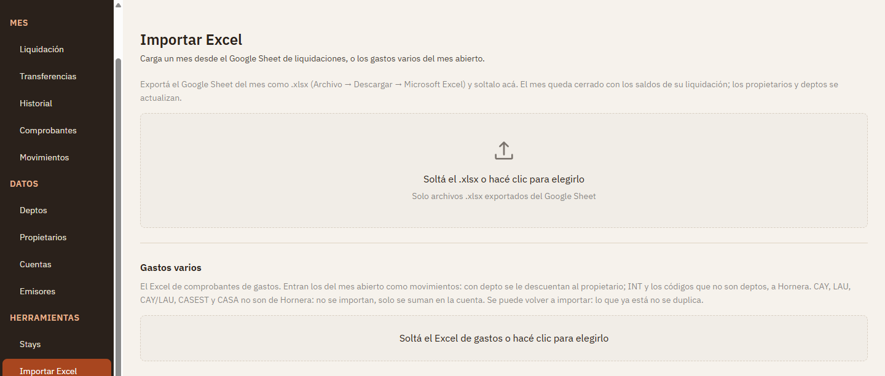
Elegir o arrastrar el archivo .xlsx.
Al terminar dice qué período se importó, cuántas liquidaciones y los avisos (por ejemplo, deptos sin facturante que no se importan).
Los meses anteriores se pueden importar en cualquier orden: no pisan los datos de un mes más nuevo.
16. Terminales: usar Hornera en otra PC
Una terminal es otra PC de la oficina que usa los datos del servidor por la red local. Todo lo que se carga desde una
terminal queda en el servidor, con el nombre de la terminal en el registro de cambios. Esta pantalla solo aparece en la PC servidor.
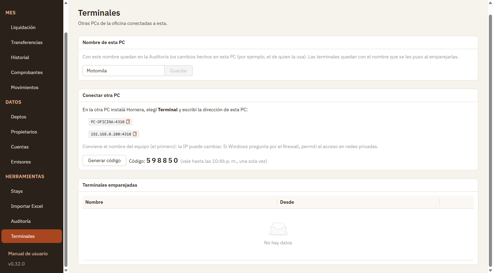
La dirección del servidor, el código para emparejar y las terminales conectadas.
Conectar una PC nueva
En el servidor, abrir Terminales y anotar la dirección (conviene la primera, con el nombre del equipo: la IP puede cambiar).
En la otra PC, instalar Hornera, elegir Terminal, escribir esa dirección y tocar Conectar.
La terminal pide un código: en el servidor tocar Generar código (dura 10 minutos y sirve una sola vez) y
escribirlo en la terminal junto con un nombre para esa PC (por ejemplo "PC de la oficina").
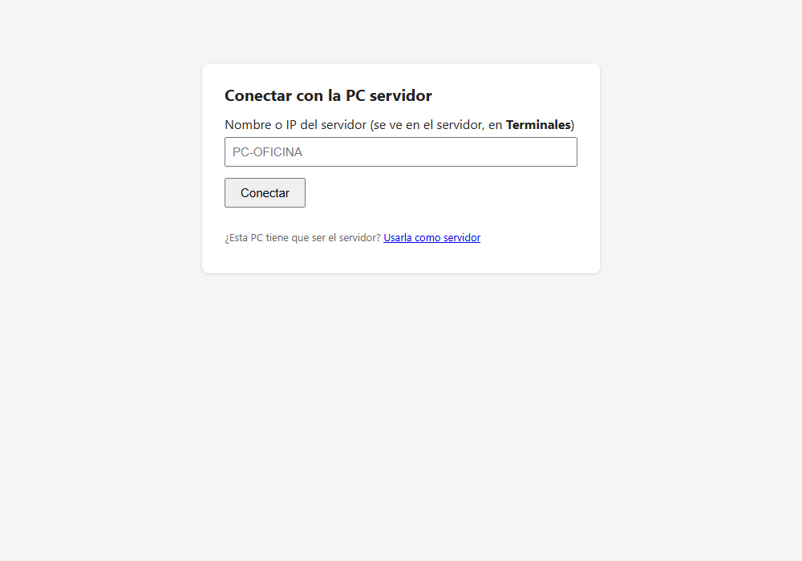
La pantalla de la terminal para elegir el servidor.
Si el servidor está apagado o Hornera está cerrada en el servidor, la terminal avisa que no puede conectar. Al volver a abrirlo, tocar
Conectar.
Revocar desconecta una terminal: esa PC deja de poder usar la app hasta que se vuelva a emparejar.
Las claves (Stays, certificados) solo se cargan en el servidor. Los PDF que se generan desde una terminal se guardan en el servidor.
En el servidor y en la terminal no se puede abrir Hornera dos veces: un segundo doble clic trae al frente la ventana abierta.
17. Copias de seguridad y recuperación
Hornera hace una copia de la base al cerrar la app y cada 6 horas mientras está abierta, en
%APPDATA%\Hornera\backups (archivos hornera-<fecha>.db). Se guardan las últimas 60.
Las copias no incluyen la clave de Stays ni las de los certificados.
Recuperar una copia
Cerrar Hornera.
En %APPDATA%\Hornera, guardar aparte una copia del archivo hornera.db actual.
Copiar la copia de seguridad elegida de backups sobre hornera.db (renombrándola).
Borrar hornera.db-wal y hornera.db-shm si están, y abrir Hornera.
Probar sin miedoPara practicar sin tocar los datos de verdad: copiar el acceso directo, renombrarlo "Hornera (prueba)" y, en
Propiedades → Destino, agregar al final --user-data-dir=C:\HorneraPrueba. Esa copia usa su propia base. Las dos no
pueden estar abiertas a la vez.
18. Problemas frecuentes
Qué pasa
Qué hacer
"No se pudo conectar con Stays…"
Es un corte de internet. Revisar la conexión y volver a traer el mes: no se guardó nada a medias.
"Stays rechazó el usuario o la clave"
Cambiar la clave en la pantalla Stays (desde la PC servidor).
No deja cargar un movimiento: "período cerrado"
El mes está cerrado. Cargarlo en el mes abierto o reabrir el mes (si no tiene pagos).
No deja reabrir un mes
Tiene pagos: anularlos en Transferencias. O el mes siguiente está cerrado: reabrir ese primero.
No deja cerrar un mes
Falta la cotización del dólar, o el mes anterior no está cerrado.
El saldo de una cuenta no da como el banco
Revisar el saldo inicial, que cada medio de pago de Stays esté asociado a su cuenta y que estén cargados los gastos.
Al facturar: "Computador no autorizado a acceder al servicio"
Falta autorizar wsfe al certificado en el Administrador de Relaciones de ARCA.
La factura quedó "rechazada"
Leer el motivo en la fila del pago, corregir (datos fiscales, conexión) y tocar Reintentar.
La terminal no conecta
Que Hornera esté abierta en el servidor, que estén en la misma red, la dirección tal cual la muestra Terminales y el firewall con redes privadas permitidas.
Cómo reportar un problema
Versión (abajo a la izquierda) y pantalla.
Qué se hizo (los pasos), qué se esperaba y qué pasó.
Si es una diferencia con el Excel: depto, mes, campo y los dos valores.
Una captura ayuda, pero no mandarla por canales públicos: muestra datos de propietarios y montos.
19. Glosario
Término
Significado
Bruto
Ingresos del depto en el mes: lo cobrado en pesos más lo cobrado en dólares convertido al cambio.
Honorarios
Lo que cobra Hornera: la comisión del depto sobre el bruto menos costos operativos y comisiones, redondeada a centenas.
Ingreso bruto
Ingresos operativos menos costos (costos operativos y comisiones de plataformas). Sobre esto se calculan los honorarios.
Valor liquidación inicial
Ingreso bruto menos honorarios.
Gastos Varios
Gastos del depto y adelantos al propietario cargados en el mes (Movimientos), sin el saldo anterior ni los pagos.
Valor liquidación final
Valor liquidación inicial menos gastos varios. Sumado al saldo anterior da el saldo.
Costos operativos
La tarifa por reserva (limpieza, lavandería, gestión, mantenimiento), prorrateada a las noches del mes.
Saldo
Lo que le corresponde al propietario. Positivo: se le transfiere. Negativo (en rojo): debe.
Cambio
Dólar cripto al cierre menos el descuento del mes; convierte entre pesos y dólares.
Mes abierto / cerrado
Abierto: se recalcula y admite cambios. Cerrado: la liquidación queda guardada y congelada.
INT / Empresa
Movimientos que no son de un depto sino de Hornera.
Anular
Dejar sin efecto un movimiento o un pago sin borrarlo.
Emisor
Quien factura los honorarios (Lautaro o Amancay).
Homologación / Producción
El ARCA de prueba (facturas sin validez) y el real.
CAE
Código de autorización que ARCA da a cada factura aprobada.
Nota de crédito (NC)
Comprobante que anula una factura, por ejemplo al anular un pago facturado.
Servidor / Terminal
La PC que guarda los datos / otra PC que los usa por la red.